犬猫と暮らす
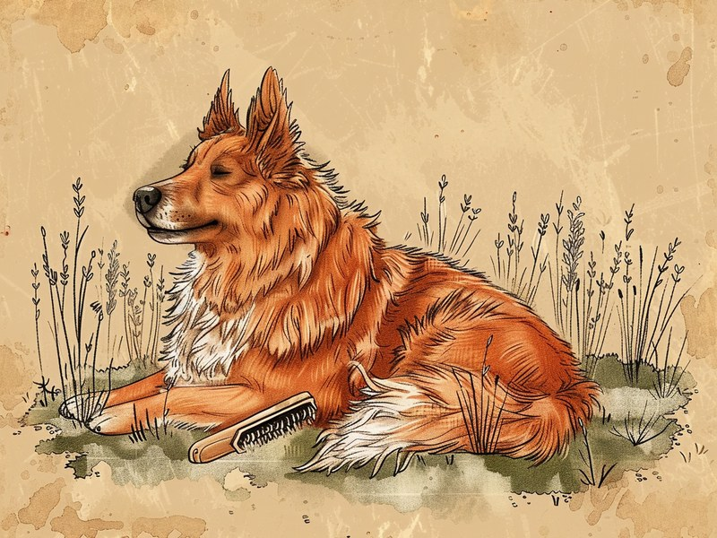
換毛期のお手入れ完全ガイド:頻度とブラッシングのコツ
ダブルコート・シングルコートの違いと、正しいブラッシングの頻度・道具の使い分けを解説します。
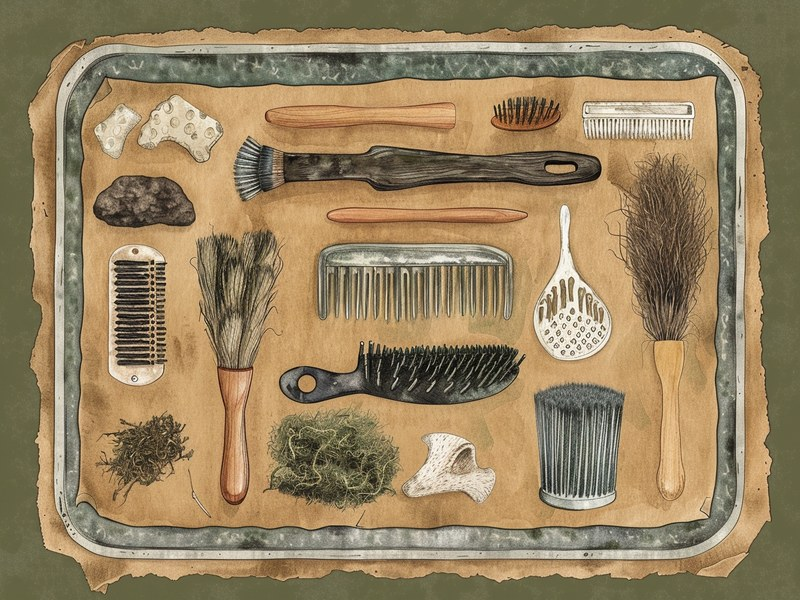
換毛期のブラシ選び:スリッカー・ラバー・コーム、どれを使う?
抜け毛対策の道具をタイプ別に紹介、それぞれの得意分野と選び方のポイントを解説します。
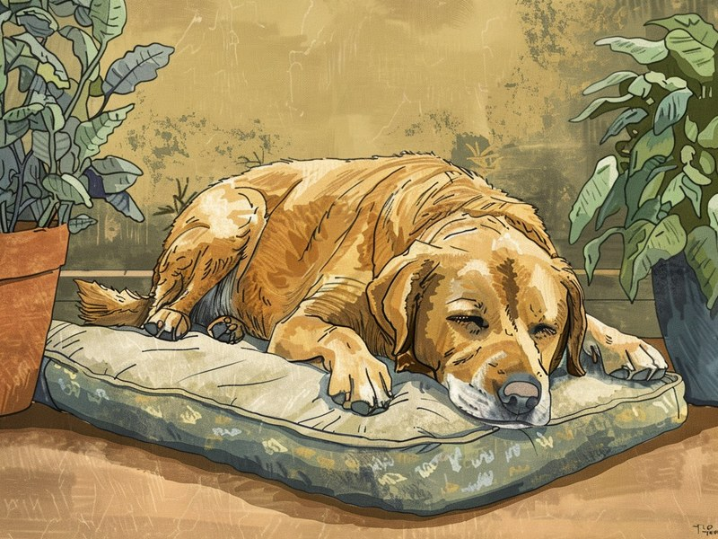
シニア期に入ったら見直したい、暮らしの工夫
嗅覚の変化に合わせた食事の工夫や、無理のないフードの切り替え方など、シニア期の暮らしのポイントを解説します。
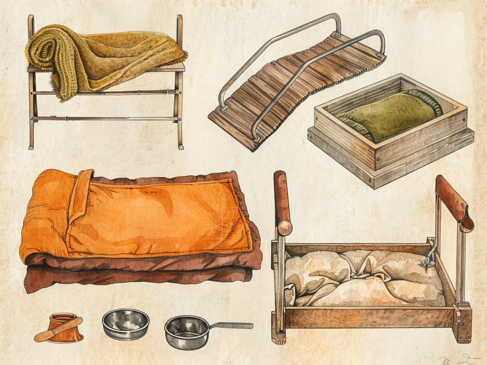
シニア犬猫のための暮らしグッズ:段差・食事・寝床を見直す
関節や体温調節が気になる時期に見直したい、住環境まわりのグッズをタイプ別に紹介します。

犬猫の花粉症シーズンのケア:症状と対策
花粉症は皮膚に症状が出やすいという特徴と、帰宅後にできる具体的なケア方法を解説します。
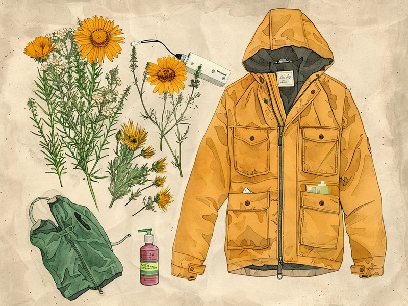
花粉症対策グッズの選び方:空気清浄機・ウェットシート・ウェア
帰宅後のお手入れから室内対策まで、花粉シーズンに役立つ道具をタイプ別に紹介します。
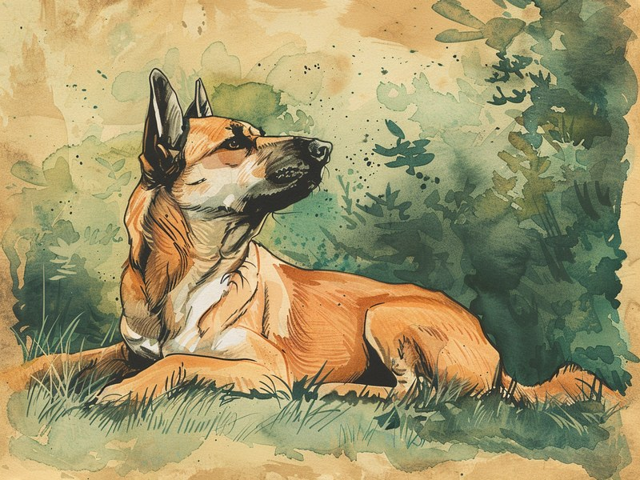
犬猫の暑さ対策:散歩の時間帯と室温管理
散歩に適した時間帯の選び方や、留守番中の室温管理など、暑い時期に見直したいポイントを解説します。
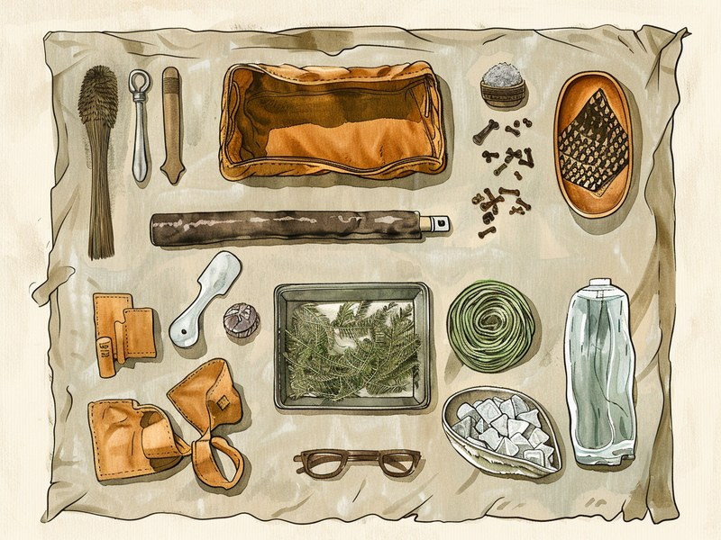
暑さ対策グッズの選び方:クールマット・給水器・冷感ウェア
クールマットや循環式給水器など、暑い時期の暮らしに役立つ道具をタイプ別に紹介します。
うさぎと暮らす
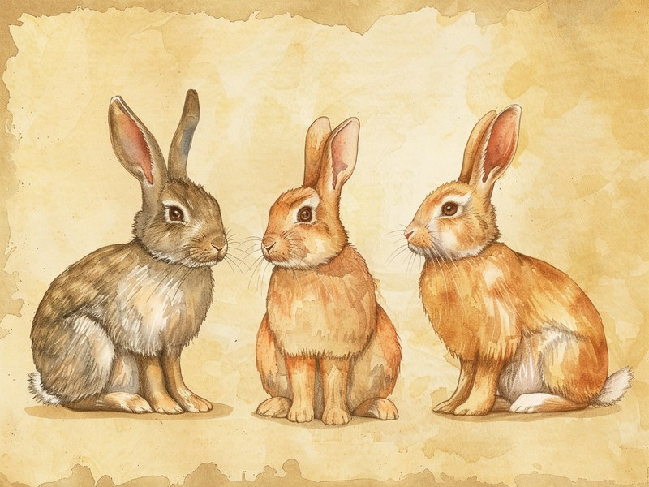
うさぎの代表的な品種7選:大きさと性格の違い
ネザーランドドワーフからダッチまで、日本でよく流通する品種の体格や性格の傾向を紹介します。

うさぎの体の特徴:飼う前に知っておきたい歯と体温調節のこと
一生伸び続ける歯や暑さへの弱さなど、飼育に直結する体の特徴をまとめました。
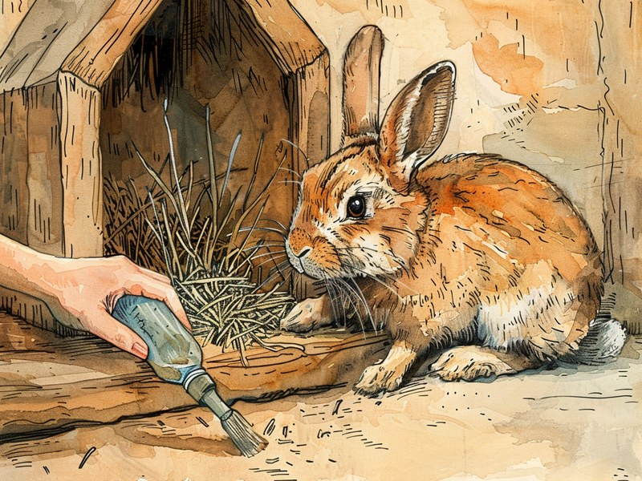
うさぎの飼い方の基本:温度管理・お手入れ・多頭飼いの注意点
適正な室温・湿度からブラッシング頻度、多頭飼いの注意点まで基本をまとめました。
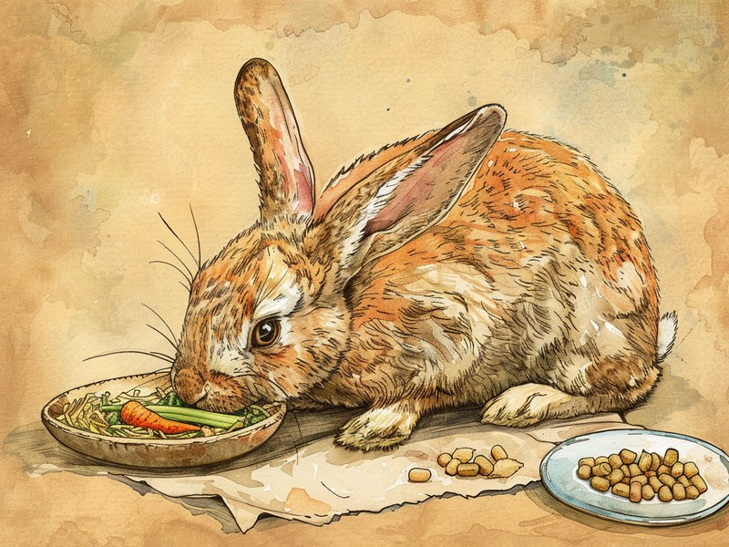
うさぎの餌の基本:牧草とペレットの与え方、与えてはいけない食べ物
牧草中心の基本構成と、ねぎ類・アボカドなど与えてはいけない食べ物を解説します。
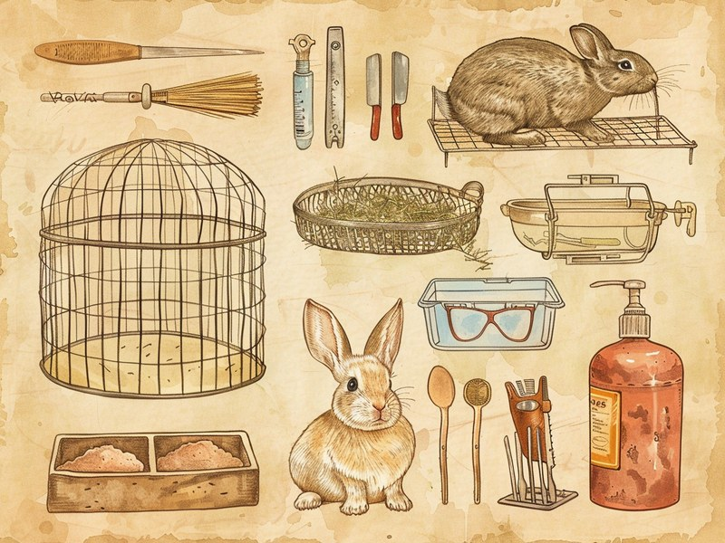
うさぎの飼育アイテム:ケージ・給水器・お手入れ用品の選び方
足裏や歯、体温を守る視点で、ケージからブラシまで必要なアイテムを紹介します。

うさぎの体調不良のサイン:早めに気づきたい病気のとき
食欲・排泄物・様子の変化から、早めに気づくためのポイントをまとめました。
ハムスターと暮らす
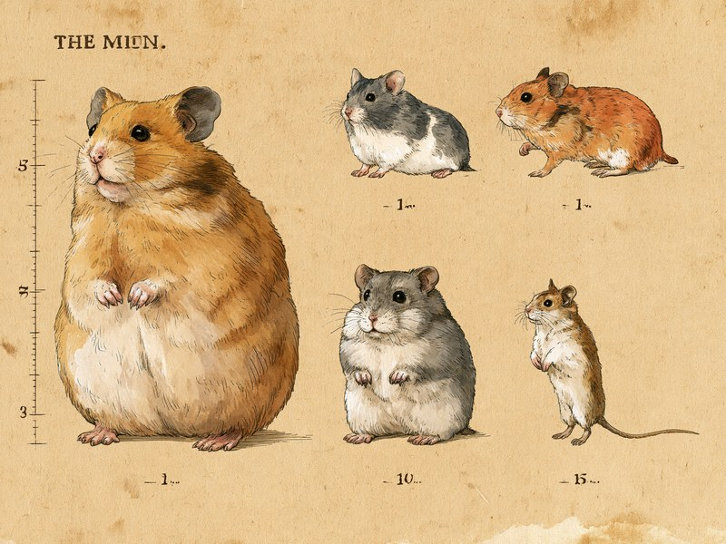
ハムスターの代表品種5選:大きさと性格の違い NEW
ゴールデンからロボロフスキーまで、日本でよく流通する品種の体格や性格の傾向を紹介します。
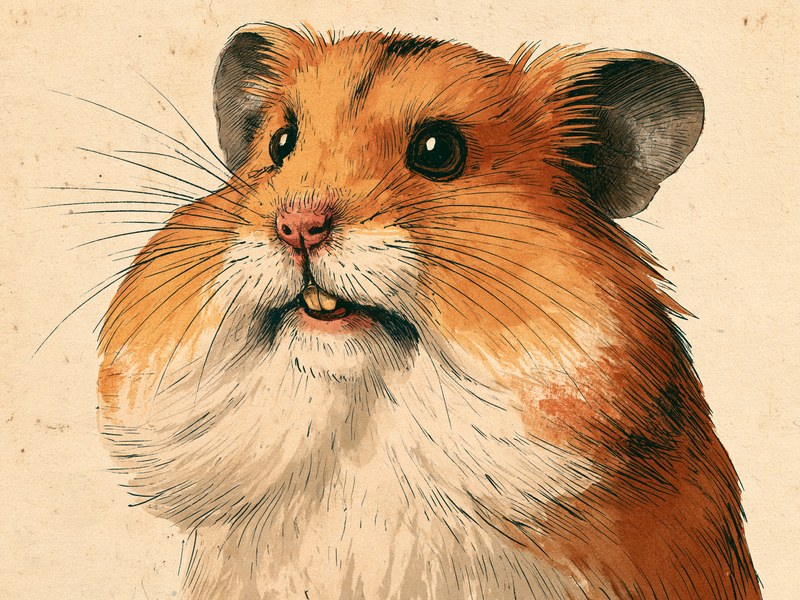
ハムスターの体の特徴:飼う前に知っておきたい頬袋と歯のこと NEW
肩の近くまで伸びる頬袋や一生伸び続ける前歯など、飼育に直結する体の特徴をまとめました。
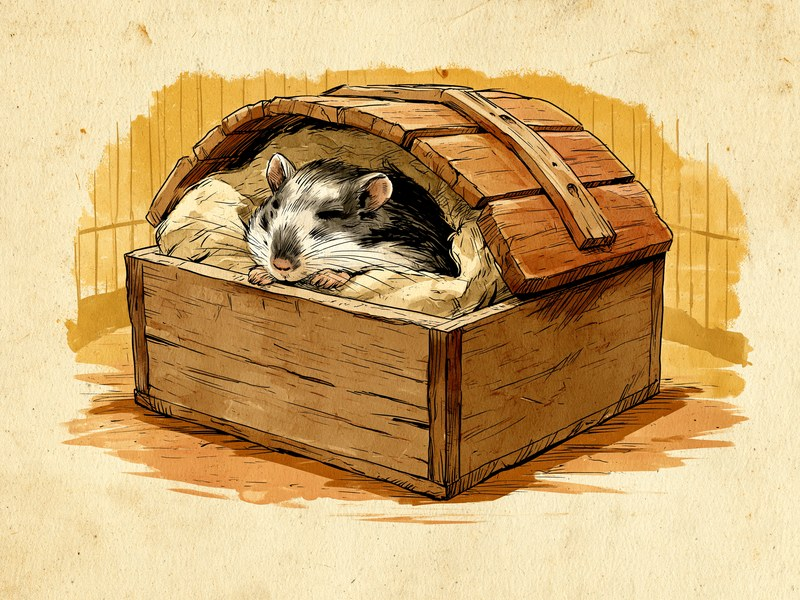
ハムスターの飼い方の基本:温度管理・単独飼育・慣らし方
適正な室温・湿度から単独飼育の理由、迎えた直後の慣らし方まで基本をまとめました。
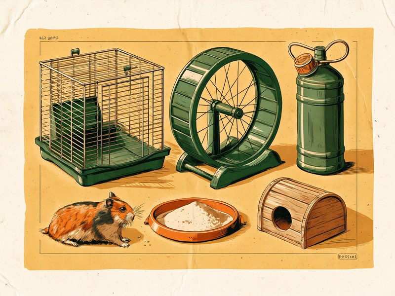
ハムスターの餌の基本:ペレットと野菜の与え方、与えてはいけない食べ物
主食のペレットの給与量から、ねぎ類・アボカドなど与えてはいけない食べ物を解説します。
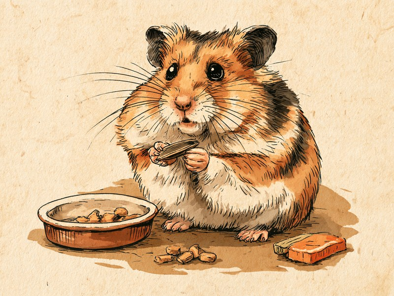
ハムスターの飼育アイテム:ケージ・回し車・お手入れ用品の選び方
歯や足、体温を守る視点で、ケージから回し車まで必要なアイテムを紹介します。
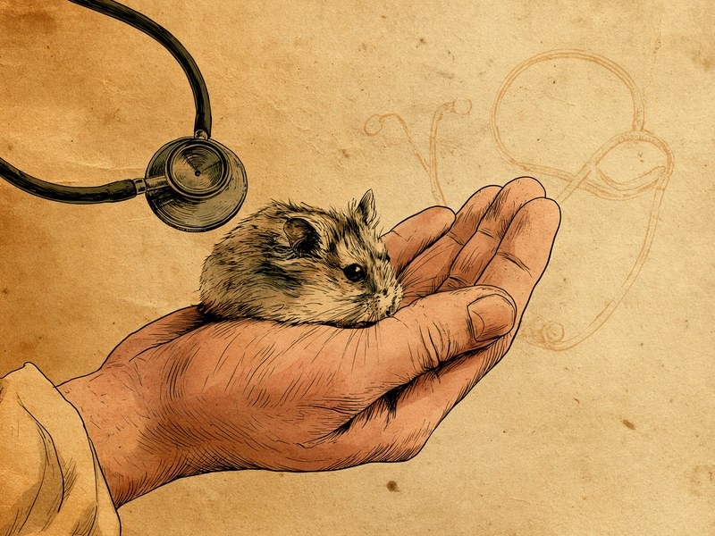
ハムスターの体調不良のサイン:早めに気づきたい病気のとき
ウェットテールや疑似冬眠など、早めに気づくためのポイントをまとめました。